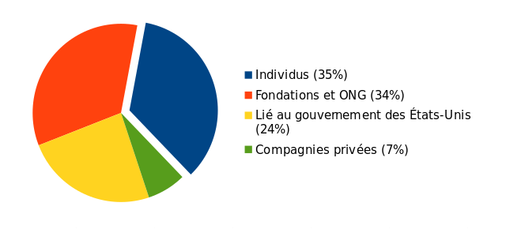

Chaque jour, Tails aide des milliers de personnes à être protégées lors de l'utilisation d'un ordinateur en réseau et hors réseau.
Tails est disponible gratuitement car nous croyons que personne ne devrait avoir à payer pour être protégé de la surveillance et de la censure.
Tails est un logiciel libre car si notre code source était fermé, personne ne pourrait vérifier qu'il est sûr.
Dans l'Internet d'aujourd'hui, la stratégie économique la plus rentable est de s'appuyer sur la publicité et le pistage. Mais l'une des raisons de notre existence est également de vous protéger contre la publicité ciblée, et nous ne voulons évidemment pas dépendre de ces sources de revenus.
Le nombre de personnes utilisant Tails est en constante augmentation et il est de notre responsabilité de fournir l'outil le plus simple et le plus sûr possible. En 2019, nous voulons que Tails soit plus facile à installer, à mettre à jour, à utiliser et d'inclure encore plus de protection en matière de sécurité.
Réaliser Tails coûte environ 200 000€ chaque année. Il s'agit d'un très petit montant étant donné tout le travail accompli, et beaucoup d'entre nous font encore beaucoup de travail gratuitement en plus des heures rémunérées.
Notre argent vient de :
- Des personnes passionnées comme vous
- Des entreprises privées comme Mozilla, DuckDuckGo ou Lush
- Des fondations et des ONG comme The Handshake Foundation ou The ISC Project
- Des fonds provenant du gouvernement des États-Unis comme le Open Technology Fund

Nous entendons souvent des plaintes au sujet de projets logiciels destinés à lutter contre la surveillance, comme Tor et Tails, qui obtiennent des fonds du gouvernement des États-Unis. Nous partageons cette préoccupation et nous ne serons jamais à l'aise tant que le bon fonctionnement de notre projet dépendra d'un tel financement.
C'est pourquoi il est si important d'être soutenu par des personnes comme vous, et que notre indépendance soit protégée par vos dons.
Avec nos statistiques anonymisées, nous savons que Tails est utilisé plus de 20 000 fois chaque jour. Si chaque personne utilisant Tails donne 5€, notre campagne de dons serait terminée en une seule journée. Nous n'avons besoin que de l'équivalent d'une clé USB.
Mais nous savons que beaucoup des personnes qui ont le plus besoin de Tails ne peuvent pas donner, parce qu'elles sont en difficultés pour donner à un outil anti-surveillance comme Tails, ou simplement parce qu'elles n'ont pas d'argent.
L'année dernière, nous avons reçu 1 167 dons pour un total de 101 644€. Cette année, nous aimerions atteindre 120 000€ et un plus grand nombre de personnes faisant un don.
Merci de prendre une minute pour faire un don à Tails aujourd'hui.